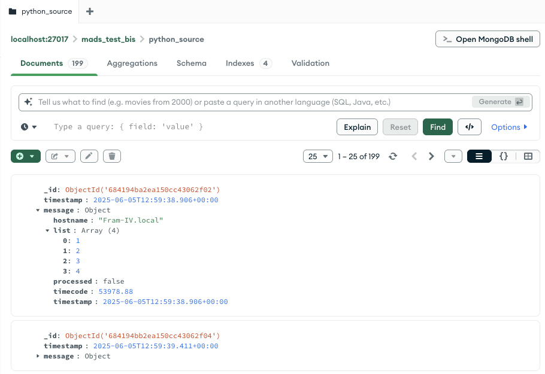
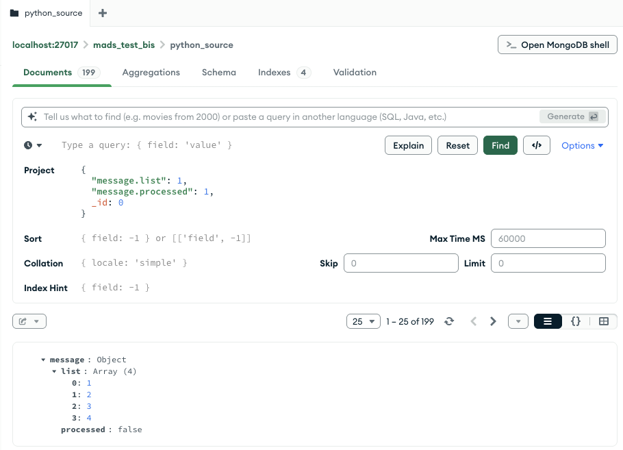
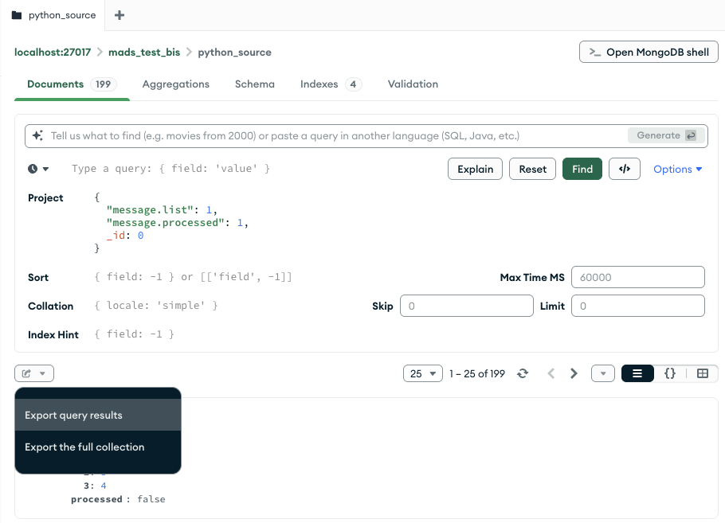
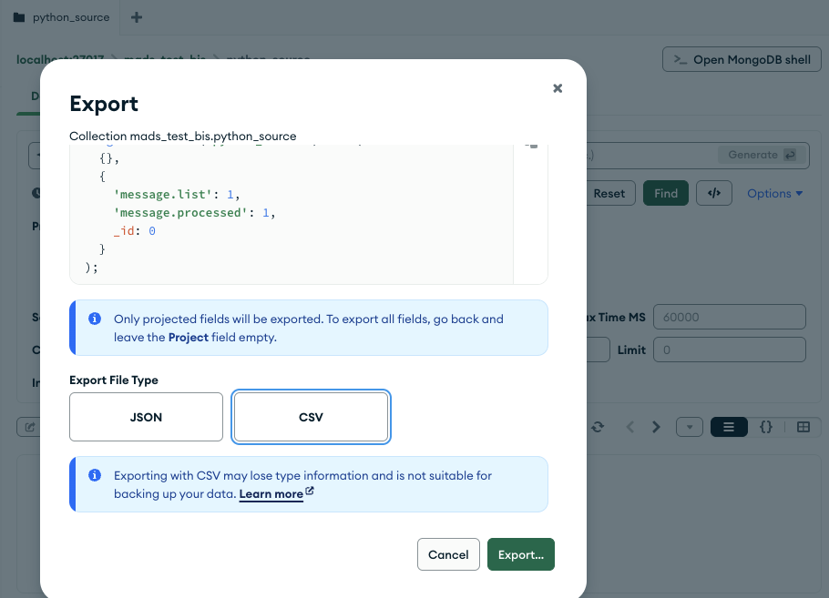

Replay plugin
When debugging a MADS system, it might prove useful to have a way to “replay” a previously recorded data stream. This is what the replay.plugin does.
The plugin
Getting it
The replay.plugin is available on https://github.com/MADS-NET/replay_plugin. Clone it and build as usual with (on Windows, follow the instriction on the README.md file):
cmake -Bbuild -DCMAKE_INSTALL_PREFIX="$(mads -p)"
cmake --build build -j4
sudo cmake --install buildConfiguration
Apart from the common settings, the INI file for the replay.plugin requires the following additional fields:
[replay]
csv_file = "path/to/file.csv"
loop = true # once the end of file has been reached, start again from beginningNote that the CSV file path can be either absolute or relative to the current working directory (the one where you launch the agent).
Mapping a CSV to a list of JSON objects
The CSV is supposed to contain a list of datasets, one per row, with different signals in different rows.
But how do we map a flat row of a CSV file to a structured JSON object, which may have nested sub-objects and sub-arrays?
The answer is to use keypaths as column headers. A keypath is a string that identifies the path to a specific field in a JSON object, using dots (.) to separate different levels of the hierarchy, and square brakets ([]) to indicate array indices. for example:
# Comments and empty lines are skipped
timestamp, sensor[0].temperature, sensor[0].humidity, sensor[1].temperature, sensor[1].humidity
2024-06-01T12:00:00Z, 22.5, 45.0, 23.0, 50.0becomes:
{
"timestamp": "2024-06-01T12:00:00Z",
"sensor": [
{
"temperature": 22.5,
"humidity": 45.0
},
{
"temperature": 23.0,
"humidity": 50.0
}
]
}Creating a CSV file
An input CSV file can be easily created with scripting languages by generating synthetic data, or by logging data from sensors.
Another possibility is to use MADS to record data in the MongoDB database, then use MongoDB Compass to export the data as CSV.
To do that, open the table you want to export in Compass. Suppose that you have something similar:

We only want to export the elements with keypaths message.list and message.processed. Then expand the Options… query menu and set the Project field as:

Now click on the expand icon on the top left of the objects list and select Expand query results:

Finally, select CSV as export format, and save the file:

The resulting CSV file will look like this (first two lines only):
message.list[0],message.list[1],message.list[2],message.list[3],message.processed
1,2,3,4,falseThe replay of the data currently only support the timing stated by the --period command line option or by the period INI file field. This means that:
- if the original data contains a timestamp field, that is not used for the replay
- if stream was not periodic, the replay will be anyway periodic, with the specified period.